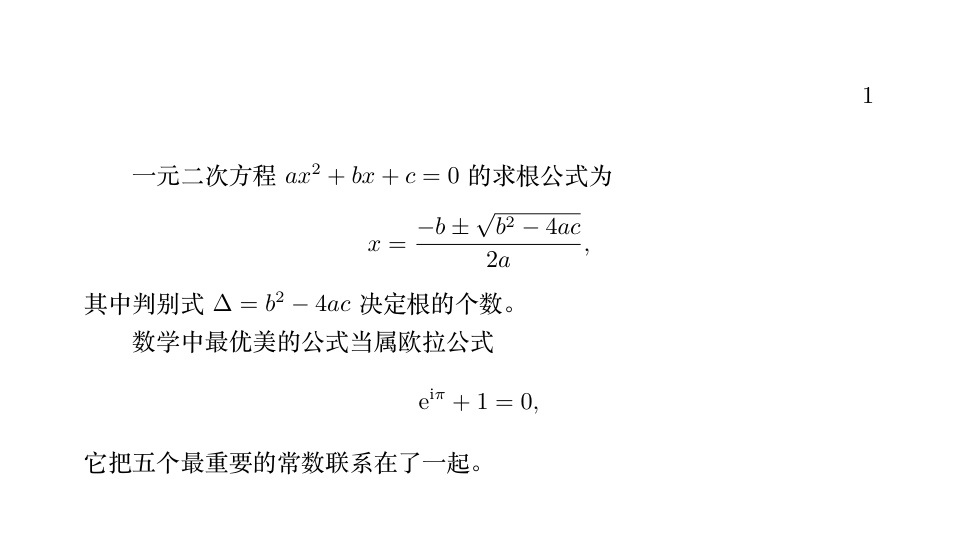

LaTeX Fundamentos de fórmulas matemáticas
La composición matemática es la joya de la corona de LaTeX, y también la primera razón por la que la mayoría lo elige.
Este artículo cubre los cimientos de las fórmulas matemáticas: fórmulas en línea y en modo display, superíndices y subíndices, fracciones, raíces, letras griegas y tablas de símbolos comunes.
Cada comparación «escritura → resultado» del artículo se renderiza en tiempo real; el efecto que ves en la página web es exactamente como LaTeX lo compone.
Fórmulas en línea y fórmulas en modo display
Las fórmulas solo tienen dos formas de presentación: la fórmula en línea, incrustada en el texto, se envuelve con un par de $; la fórmula en modo display, centrada en su propia línea, se envuelve con \[ y \].
Ejemplo
\[
x = \frac{-b \pm \sqrt{b^2 - 4ac}}{2a},
\]
donde el discriminante$\Delta = b^2 - 4ac$determina el número de raíces.
Efecto de renderizado:
| Forma | Escritura | Resultado | Cuándo se usa |
|---|---|---|---|
| Fórmula en línea | $...$ | A la misma altura que el texto, incrustada en la oración | Fórmulas simples, referenciadas dentro de la oración |
| Fórmula en modo display | \[...\] | En su propia línea, centrada, con tamaño de letra mayor | Fórmulas importantes, fórmulas complejas |
Hay dos hábitos que se deben evitar: primero, usar el antiguo $$...$$ para fórmulas en modo display, ya que su control del espaciado es defectuoso; usa siempre \[...\]. Segundo, cuando una frase se interrumpe por una fórmula en modo display, no dejes una línea en blanco antes de la fórmula: la fórmula sigue dentro de la oración, no es un nuevo párrafo.
Superíndices y subíndices
^ es el superíndice y _ es el subíndice; ambos afectan solo al carácter o grupo de llaves que los sigue inmediatamente.
Compara las escrituras de la cuarta y quinta líneas: x_i^2 es «el cuadrado del i-ésimo x», x^{i^2} es «x elevado a i²»: las llaves determinan el alcance; una pequeña diferencia puede provocar un error enorme.
Si hay más de un carácter en el superíndice o subíndice, es obligatorio usar llaves. x^10 se compone como x¹0 (x a la primera potencia seguido de un 0); la escritura correcta es x^{10}.
Fracciones y raíces
\frac{分子}{分母} genera una fracción, \sqrt{被开方数} genera una raíz, y la raíz n-ésima se escribe como \sqrt[n]{...}.
El último par merece mención especial: los paréntesis normales no crecen con el contenido; \left( y \right) hacen que los paréntesis se ajusten automáticamente a la altura del contenido; son imprescindibles al envolver fracciones o matrices.
En las fórmulas en línea, las fracciones se comprimen automáticamente (el denominador baja y el tamaño de letra se reduce). Si te parece demasiado pequeña, cambia \frac por \dfrac (display frac) y la fracción mantendrá el tamaño de modo display.
Letras griegas
El comando para las letras griegas es simplemente «barra invertida + nombre en inglés»; las mayúsculas y minúsculas se controlan con la primera letra del comando.
| Comando | Resultado | Comando | Resultado |
|---|---|---|---|
| \alpha | \beta | ||
| \gamma | \delta | ||
| \epsilon | \varepsilon | ||
| \theta | \lambda | ||
| \mu | \pi | ||
| \sigma | \omega | ||
| \phi | \varphi |
| Comando | Resultado | Comando | Resultado |
|---|---|---|---|
| \Gamma | \Delta | ||
| \Sigma | \Omega |
Ten en cuenta dos puntos: en los comandos de mayúsculas solo se capitaliza la primera letra (\Sigma no es \SIGMA); \epsilon y \varepsilon, \phi y \varphi son dos variantes de la misma letra; en la convención matemática tienen usos distintos, pero en un artículo basta con mantener la consistencia.
Referencia rápida de símbolos comunes
Los símbolos de uso frecuente se organizan en tres tablas según su uso; la columna de resultado está renderizada en tiempo real.
| Comando | Resultado | Comando | Resultado |
|---|---|---|---|
| \times | \div | ||
| \pm | \mp | ||
| \cdot | \leq | ||
| \geq | \neq | ||
| \approx | \equiv | ||
| \ll | \gg |
| Comando | Resultado | Comando | Resultado |
|---|---|---|---|
| \in | \notin | ||
| \subset | \subseteq | ||
| \cup | \cap | ||
| \emptyset | \infty | ||
| \forall | \exists | ||
| \Rightarrow | \Leftrightarrow |
| Comando | Resultado | Comando | Resultado |
|---|---|---|---|
| \partial | \nabla | ||
| \to | \mapsto | ||
| \mathrm{d}x | \hat{x} | ||
| \bar{x} | \vec{v} |
Operadores grandes: sumatorio, integral, límite
\sum, \int y \lim son los tres operadores grandes más comunes; se usan junto con superíndices y subíndices.
En las fórmulas en modo display, los superíndices y subíndices del sumatorio se colocan directamente encima/debajo del símbolo; al ponerlo en una fórmula en línea se comprimen automáticamente a los lados. Si también quieres mantener la forma «arriba/abajo» en una fórmula en línea, basta con envolverlo en \displaystyle.
Dos paquetes imprescindibles: amsmath y amssymb
amsmath y amssymb son las «extensiones oficiales» para la composición matemática; se recomienda cargarlos sin dudar antes de escribir fórmulas.
| Paquete | Qué ofrece |
|---|---|
| amsmath | Más entornos de fórmula (align, etc., artículo 7), \dfrac, \tfrac, control de numeración de fórmulas |
| amssymb | Ampliación de símbolos matemáticos, como \mathbb para letras de pizarra |
Los comandos de efectos tipográficos más comunes en matemáticas también provienen de estos dos paquetes:
La última línea es un detalle de tipografía: la base del logaritmo natural e y la unidad imaginaria i, si se escriben directamente, se componen como variables en cursiva; si se envuelven con \mathrm se componen en redonda, como exigen las normas editoriales.
En las fórmulas no deben aparecer caracteres chinos ni puntuación de ancho completo. El signo más de ancho completo y las letras griegas Unicode escritos con el método de entrada, como $α＋β$, son usos incorrectos: el contenido de las fórmulas debe ingresarse con comandos, y las explicaciones en chino deben ir fuera de los $.
Ejemplo completo: un documento real
Compila el contenido de este artículo en un documento completo:
Ejemplo
\usepackage{amsmath} % 数学公式增强宏包，公式排版标配
\begin{document}
De la ecuación cuadrática$ax^2 + bx + c = 0$la fórmula de las raíces es:
\[
x = \frac{-b \pm \sqrt{b^2 - 4ac}}{2a},
\]
donde el discriminante$\Delta = b^2 - 4ac$determina el número de raíces.
La fórmula más hermosa de las matemáticas es la fórmula de Euler
\[
\mathrm{e}^{\mathrm{i}\pi} + 1 = 0,
\]
Ella relaciona las cinco constantes más importantes.
\end{document}

Resumen
| Necesidad | Escritura |
|---|---|
| Fórmula en línea | $...$ |
| Fórmula en modo display | \[...\] |
| Superíndices y subíndices | x^{10}, a_{ij} (si hay varios caracteres, deben ir entre llaves) |
| Fracción / Raíz | \frac{a}{b}、\sqrt[n]{x} |
| Paréntesis autoajustables | \left( \right) |
| Fracción grande en línea | \dfrac{a}{b} |
| Caracteres en redonda | \mathrm{e} |
Haz clic para compartir nota
<p style="font-size:14px;">¡La nota debe ser una extensión del contenido de este artículo!</p><br> <p style="font-size:12px;"><a href="../tougao.html" target="_blank">Puedes hacer clic aquí para enviar artículos</a></p> <p style="font-size:14px;"><a href="../w3cnote/runoob-user-test-intro.html" target="_blank">Cómo obtener el código de invitación de registro</a></p> <h3 class="text-muted"><i class="fa fa-info-circle" aria-hidden="true"></i> ¡Antes de compartir notas debes <a href=";.html" class="runoob-pop">iniciar sesión</a>!</h3> <p><a href="../w3cnote/runoob-user-test-intro.html" target="_blank">Cómo obtener el código de invitación de registro</a></p>